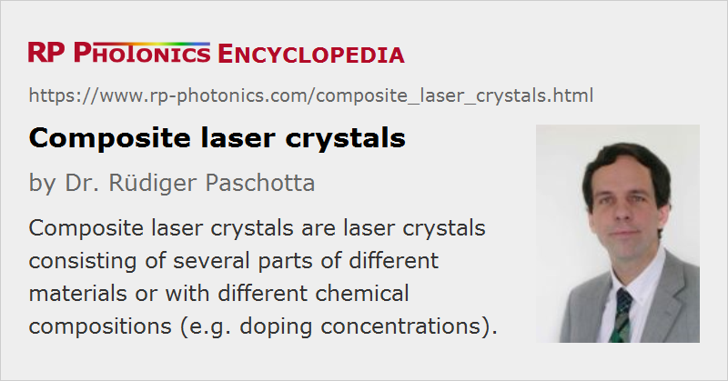

Composite Laser Crystals
Definition: laser crystals consisting of several parts of different materials or with different chemical compositions (e.g. doping concentrations)
Alternative terms: hybrid laser crystals, core-doped rods
More general terms: laser crystals
Categories: optical materials, lasers
How to cite the article; suggest additional literature
Author: Dr. Rüdiger Paschotta
Composite laser crystals (sometimes called hybrid laser crystals) are laser crystals which have been fabricated by combining different parts. Typically, adhesive-free diffusion bonding of carefully prepared crystal surfaces is used, e.g., to combine an Nd:YAG or Yb:YAG crystal with an undoped YAG crystal. The same can be done e.g. with Nd:YVO4. Another possibility is to bond a Cr:YAG crystal (a saturable absorber material for passive Q switching) to Nd:YAG. In other cases, a nonlinear crystal material for nonlinear frequency conversion is bonded to a laser crystal. Composite gain media can also be made of glasses and from ceramics.
The optical quality of bonded interfaces is essential. Different processes have been developed for obtaining high-quality bonds. Some of these operate at high temperatures, while others can be performed also at room temperature. One may, for example, use irradiation with high-energy ions in a vacuum to remove any disturbing surface layers before bonding. In any case, preparing very flat surfaces is essential.
In the following, some examples of the use of composite gain media are given:
- Undoped end caps on a short laser rod can reduce thermal effects by extracting some of the heat through the end faces of the doped part. This reduces the peak temperature, the tendency for thermal fracture, and (for several reasons) the strength of thermal lensing. Such crystals improve e.g. the performance of quasi-three-level neodymium lasers, such as Nd:YAG operated at 946 nm, where the heat generation is significantly stronger than for the usual 1064-nm wavelength.
- When plates with different doping concentrations are bonded together (multi-segmented rods), the density of absorbed pump power (which normally decays rapidly in the pumping direction) can be smoothed. This leads to a more uniform temperature rise in an end-pumped laser. With suitable laser designs, this feature can be converted into improved overall performance, in particular for a higher output power, power efficiency, and beam quality.
- Another approach is to use a core-doped rod, where pump light is absorbed only in the region covered by the laser beam. This is suitable also for side pumping of lasers, as it avoids pumping regions of the crystal which cannot be accessed by the lasing modes. It may therefore be possible to obtain enhanced efficiency and possibly a better beam quality. The doped part may even act as a waveguide, as the doping often somewhat increases the refractive index.
- With an undoped cap on the disk of a thin-disk laser, power scalability can be maintained up to very high power levels. This is because the undoped cap helps to suppress amplified spontaneous emission (ASE), if it has a similar refractive index. At the same time, the undoped cap can provide additional mechanical stabilization, avoiding stress fracture and also making the handling easier.
- In a composite crystal with different dopants, one part can act as the gain medium and the other one as a saturable absorber for passive Q switching. Such parts are used in, e.g., passively Q-switched microchip lasers.
In other situations, undoped end caps can help to suppress parasitic laser oscillation, and when they are properly shaped (e.g. conically) they can act as ducts for pump radiation. In some single-frequency ring lasers, an undoped section at a point of beam reflection can eliminate spatial hole burning effects.
Note that composite gain media can also be made of ceramics. The fabrication techniques for ceramics introduce a lot of freedom for composite structures, including doping gradients. It is also possible to combine single crystals and ceramics, e.g. to grow undoped ceramic around a doped single crystal.
Suppliers
The RP Photonics Buyer's Guide contains 12 suppliers for composite laser crystals.
Questions and Comments from Users
Here you can submit questions and comments. As far as they get accepted by the author, they will appear above this paragraph together with the author’s answer. The author will decide on acceptance based on certain criteria. Essentially, the issue must be of sufficiently broad interest.
Please do not enter personal data here; we would otherwise delete it soon. (See also our privacy declaration.) If you wish to receive personal feedback or consultancy from the author, please contact him e.g. via e-mail.
By submitting the information, you give your consent to the potential publication of your inputs on our website according to our rules. (If you later retract your consent, we will delete those inputs.) As your inputs are first reviewed by the author, they may be published with some delay.
Bibliography
| [1] | R. Zhou et a l., “Continuous-wave, 15.2 W diode-end-pumped Nd:YAG laser operating at 946 nm”, Opt. Lett. 31 (12), 1869 (2006), doi:10.1364/OL.31.001869 |
| [2] | R. Wilhelm et al., “Power scaling of end-pumped solid-state rod lasers by longitudinal dopant concentration gradients”, IEEE J. Quantum Electron. 44 (3), 232 (2008), doi:10.1109/JQE.2007.911702 |
| [3] | Y. T. Chang et al., “Comparison of thermal lensing effects between single-end and double-end diffusion-bonded Nd:YVO4 crystals for 4F3/2→4I11/2 and 4F3/2→4I13/2 transitions”, Opt. Express 16 (25), 21155 (2008), doi:10.1364/OE.16.021155 |
See also: laser crystals, gain media, ceramic gain media, neodymium-doped gain media, ytterbium-doped gain media, thermal lensing, high-power lasers
and other articles in the categories optical materials, lasers

This encyclopedia is authored by Dr. Rüdiger Paschotta, the founder and executive of RP Photonics Consulting GmbH. How about a tailored training course from this distinguished expert at your location? Contact RP Photonics to find out how his technical consulting services (e.g. product designs, problem solving, independent evaluations, training) and software could become very valuable for your business!
|  |
If you like this page, please share the link with your friends and colleagues, e.g. via social media:
These sharing buttons are implemented in a privacy-friendly way!